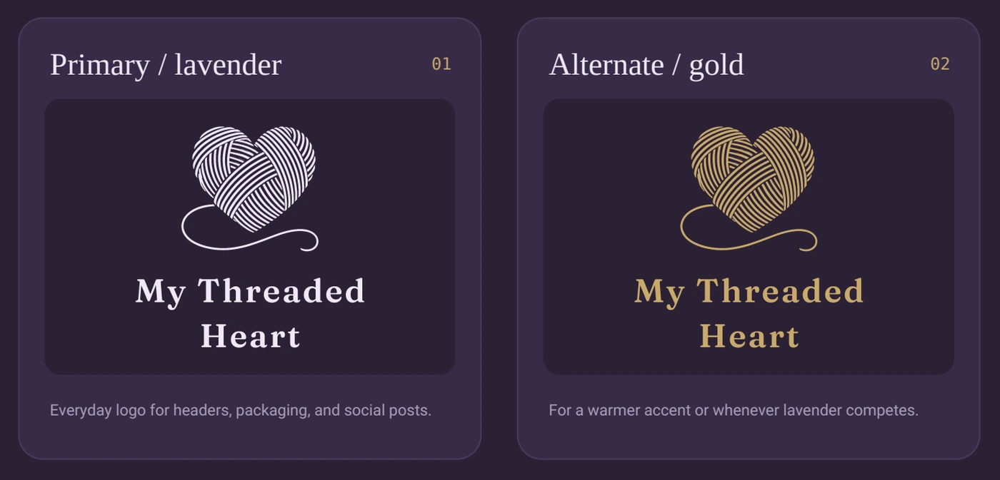

All projects
Visual identity · Digital design
My Threaded Heart
The identity for my independent embroidery business uses a yarn-heart symbol and color variants for small digital and physical placements.
- Context
- My Threaded Heart
- My contribution
- Brand ownership and application as founder
- Artifacts
- Logo exports and visual identity guidelines
Project gallery
A logo built around thread
The visual identity guide documents the primary lockup and a gold variant, with specifications for where to use each.



Design system
Design for the places it appears
Make the symbol carry the craft
The looping line reads as both yarn and a heart. It relates the name to the material and can still be recognized when a storefront gives the brand a small square avatar.
Document the decisions
The kit records lavender and gold mark variants alongside a plum palette and type choices. Fraunces is used for display and Instrument Sans for smaller supporting text. The guidance gives storefront, packaging and social assets a shared starting point.